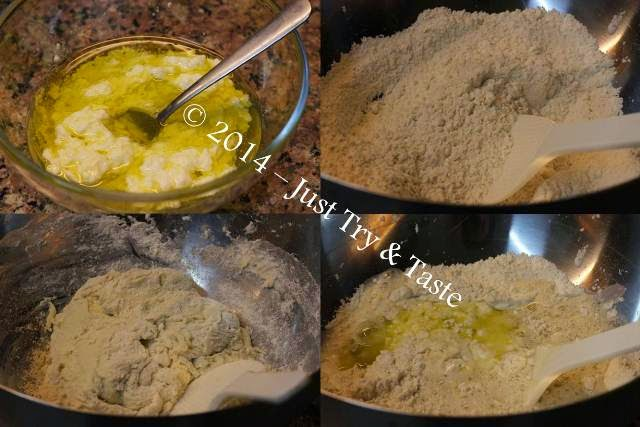

Resep Roti Naan :
2 sdm Gula pasir
140 gram Tepung terigu
5 sdm Air
Ragi secukupnya
1 sdm Mentega
Garam dapur secukupnya
Cara Membuat Roti Naan :
1. Langkah pertama dalam resep roti naan ini adalah dengan mencampurkan 40 gr tepung terigu, air dan ragi.
2. Selanjutnya aduk hingga merata, tutup dan diamkan paling tidak selama 15 menit.
3. Kemudian tambahkan bahan lainnya secara total dan uleni hingga adonan naan tidak lengket.
4. Silahkan bagi adonan tersebut menjadi beberapa bagian dan uleni lagi sehingga menyerupai bentuk bola.
5. Kemudian adonan tadi pipihkan dan diamkan selama 6 menit saja.
6. Langkah berikutnya dalam resep roti naan ini adalah dengan memanggang adonan tadi dengan menggunakan teflon yang tentu sudah diolesi dengan mentega.
7. Panggang dengan api yang kecil dan dalam keadaan di tutup.
8. Kira-kira sendiri, kalau bisa jangan sampai gosong dan harus matang dengan sempurna.
9. Kini roti naan telah selesai di buat dan siap di sajikan.
